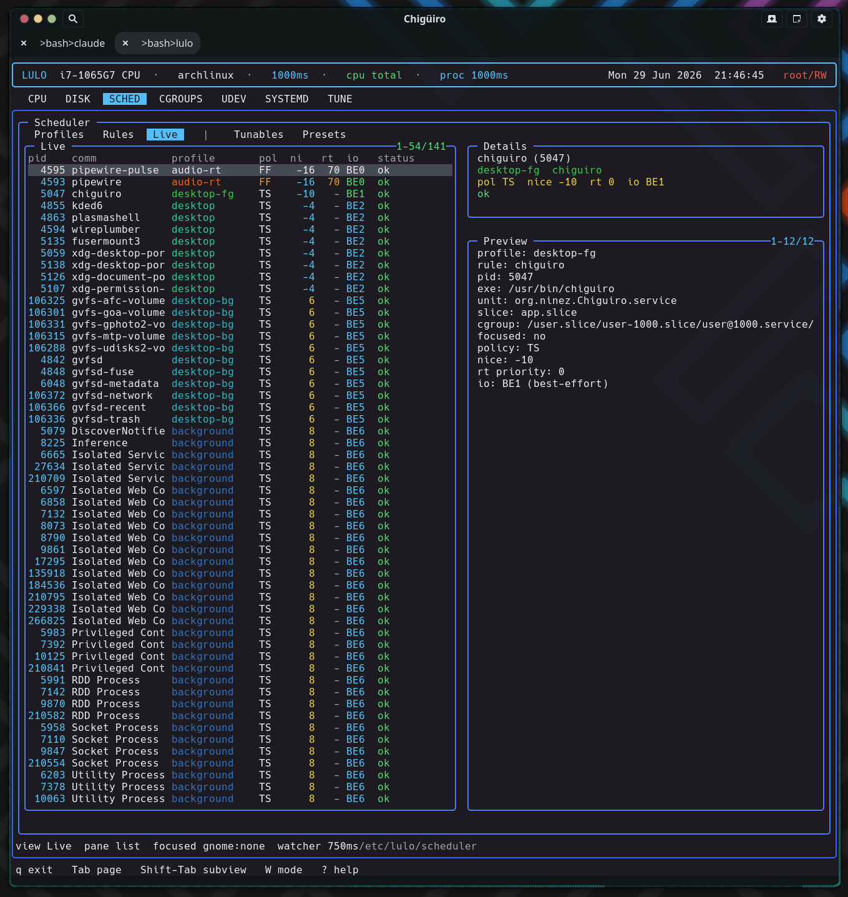

The scheduler is Lulo’s most substantial subsystem: a privileged, continuously re-enforcing /proc watcher that resolves each process to exactly one sparse profile – by exclusion, window focus, explicit rule, or background fallback – and applies nice, scheduling policy, RT priority, and I/O priority directly through syscalls every interval.
Lulo’s scheduler is a policy layer for Linux process priority. It is closer to a compact policy daemon than a one-shot chrt / renice wrapper: it loads file-backed config, scans every process on a fixed interval, classifies each one, and applies scheduling attributes – then does it all again on the next tick so policy stays enforced as processes come and go.
| Process | Scheduler role |
|---|---|
lulo |
Renders the SCHED page and opens config files in $VISUAL / $EDITOR |
lulod |
Serves scheduler snapshots to the TUI and forwards focused-PID updates |
lulod-system |
Loads config, scans /proc, applies policy, and re-enforces over time |
Only the privileged daemon lulod-system ever issues a scheduling syscall. The engine lives in src/daemon/lulod_system_sched.c (about 2,000 lines); per-process metadata collection is shared code in src/shared/lulo_proc_meta.c.
The config is a directory tree, not one large DSL file. The root is /etc/lulo/scheduler (overridable via LULOD_SYSTEM_CONFIG_DIR).
| Path | Purpose |
|---|---|
scheduler.conf |
Global settings |
profiles.d/*.conf |
Profile definitions |
rules.d/*.conf |
Rule definitions |
tunables-presets.d/*.conf |
Kernel-tunable presets |
Only regular files ending in .conf (and not dot-files) are loaded, gathered with scandir + alphasort so the load order is lexical – which is why the shipped files are numbered (10-audio-rt.conf, 14-exclude-lulo.conf, …). All three parsers share the same strict line handling: trim, skip blanks and #/; comments, require key=value, and treat an unknown key as a hard parse error. A missing scheduler.conf is non-fatal; the defaults below are seeded before parsing.
| Setting | Default | Purpose |
|---|---|---|
watcher_interval_ms |
1000 |
Rescan + reapply cadence (range 100–10000) |
focus_enabled |
1 |
Enable focused-window boosting |
focus_profile |
focused |
Profile applied to the focused app |
background_enabled |
1 |
Enable the app-scope fallback |
background_profile |
background |
Fallback profile |
background_match_app_slice |
1 |
Treat /app.slice/ cgroups as app-scope |
background_match_background_slice |
1 |
Treat /background.slice/ cgroups as app-scope |
background_match_app_unit_prefix |
1 |
Treat app-* units as app-scope |
tunables_startup_preset |
(none) | Preset auto-applied on reload |
The shipped example lowers the cadence to watcher_interval_ms=750.
A profile describes how a matched process should be treated – but only the fields it actually sets. Every value field is paired with a has_* flag, and an unset field means “leave this attribute unchanged.” A profile is therefore a sparse overlay, not a full scheduling spec.
| Field | Range / values | Meaning |
|---|---|---|
name |
string | Profile identifier (defaults to the filename stem) |
enabled |
bool (default 1) | Enables or disables the profile |
nice |
-20 .. 19 | Linux nice level |
policy |
other / batch / idle / fifo / rr |
Scheduling policy |
rt_priority |
1 .. 99 | RT priority for fifo / rr |
io_class |
none / realtime / best-effort / idle |
Linux I/O class |
io_priority |
0 .. 7 | I/O priority level |
Profiles are sorted by a synthetic “aggressiveness” score (policy rank, plus RT priority, plus 20 − nice, with disabled profiles pushed down) so the more forceful ones sort first in the UI. Some shipped examples:
| Profile | Settings |
|---|---|
audio-rt |
nice=-16, policy=fifo, rt_priority=70, io_class=best-effort, io_priority=0 |
desktop-rt |
policy=rr, rt_priority=8 (compositor-critical processes) |
focused |
nice=-20, io_class=best-effort, io_priority=0 |
background |
lower-priority fallback for app-scope processes |
idle |
nice=19, policy=idle, io_class=idle (yields aggressively) |
Because a profile only writes the dimensions it sets, different profiles compose on orthogonal axes instead of clobbering each other – and resolution always picks exactly one winner per process, so there is no double-apply.
Rules decide which profile applies to which processes. A rule is enabled by default and carries a matcher kind, a glob pattern, and a target profile (or an exclude flag).
| Field | Meaning |
|---|---|
enabled |
Enables or disables the rule (default 1) |
exclude |
If set, matched processes are dropped entirely (profile is cleared) |
match |
Matcher kind (default comm) |
pattern |
fnmatch glob – required |
profile |
Target profile – required unless exclude |
Matching is plain fnmatch glob against a field of the process’s metadata. Six matcher kinds map to six fields:
| Matcher | Field matched | Source |
|---|---|---|
comm |
Command name | /proc/PID/stat |
exe |
Executable path (falls back to basename) | readlink /proc/PID/exe |
cmdline |
Full command line | /proc/PID/cmdline |
unit |
systemd unit | Derived from the cgroup path suffix (.service / .scope) |
slice |
systemd slice | Derived from the cgroup path suffix (.slice) |
cgroup |
Full cgroup path | /proc/PID/cgroup (unified v2 line) |
The exe matcher tries the full path and then the basename, so pattern=jackd matches /usr/bin/jackd. Crucially, unit and slice are derived from the cgroup path, not queried from systemd – so the whole scheduler stays systemd-API-free while still classifying by unit and slice. This is the same cgroup structure you can browse on the Cgroups page.
Rules are scanned in a sorted order and the first enabled match wins. An exclude match drops the process completely (no profile, no focus, no background). A non-exclude match whose target profile is disabled or missing is skipped, so a lower-priority rule can still apply.
For every process, the scan resolves a single effective profile in a strict precedence: exclusion → focus override → explicit rule → background fallback.
Focus matches a process when it is the exact focused PID (verified by start-time), or shares the focused window’s systemd unit, or shares its cgroup – so focusing an app boosts its whole unit/cgroup, not just the one window-owning thread. A process is “app-scope” for the background fallback when its cgroup contains /app.slice/ or /background.slice/, or its unit begins with app- (each gated by the matching background_match_* flag). Anything that falls through all four steps is left exactly as the kernel had it.
lulod-system runs one poll() loop over its control socket with a computed timeout. When the timeout expires it rescans /proc and reapplies policy, then reschedules for watcher_interval_ms later (clamped to at least 100ms). A focus update or a config reload triggers an immediate rescan rather than waiting for the next tick.
Each scan drops any stale focus target (start-time mismatch), iterates the numeric /proc entries, collects each process’s metadata, resolves its profile, reads its current scheduling state, applies the target, and records a live row. The whole tree is re-evaluated every interval – that continuous re-enforcement is what makes the scheduler hold policy over time instead of losing it the moment a process re-execs or a new one spawns.
Applying a profile is idempotent: each attribute is written only when the current value differs from the target, so a steady-state system issues almost no syscalls. Three mechanisms cover the four dimensions:
| Dimension | Syscall |
|---|---|
| nice | setpriority(PRIO_PROCESS, pid, nice) |
| policy + RT priority | sched_setscheduler(pid, policy, ¶m) |
| I/O class + priority | ioprio_set(IOPRIO_WHO_PROCESS, pid, value) |
For fifo / rr the RT priority is the profile’s rt_priority (or a floor of 1 if unset); non-RT policies force priority 0. The I/O target has a subtle promotion: setting only io_priority promotes a none-class process to best-effort, and setting only io_class defaults the priority to 4. After applying, the engine re-queries the actual state and reports applied / ok or a per-syscall error – and it suppresses a spurious error when a write “failed” only because the value was already correct (for example an EPERM on a setting that already matched), which keeps the status column quiet for processes it cannot or need not change.
One caveat worth knowing:
SCHED_DEADLINEis ranked and labeled (DLN) in the code, but the apply path only ever callssched_setschedulerwith a plainsched_param. It never builds thesched_attr(runtime / deadline / period) thatSCHED_DEADLINErequires, and there is nosched_setattrcall anywhere – so a profile requesting deadline scheduling would fail to apply. The five working policies areother,batch,idle,fifo, andrr.
Two built-in policies are exposed in SCHED → Rules as the synthetic, display-only rows (focus) and (background). They are configured through scheduler.conf, not separate rule files.
Focus. The focus monitor runs in lulod, which forwards the focused-window PID (and its start-time and provider) to lulod-system. The system daemon re-collects metadata for that PID, verifies the start-time matches (a PID-reuse guard), records the focus target, and runs an immediate rescan. From then on, any process matching that target by PID, unit, or cgroup gets focus_profile. See Focus Providers for how the PID is detected on KDE and GNOME.
Background. Any app-scope process not already excluded, focused, or matched by an explicit rule falls through to background_profile. “App-scope” is decided purely from the cgroup and unit, as described in the resolution order above.
Self-exclusion is config, not code. There is no hardcoded guard preventing the scheduler from renicing its own processes – protection comes entirely from the shipped exclude rules: 14-exclude-lulo.conf (comm glob lulo*), 13-exclude-prio-tools.conf (chrt), plus excludes for dbus, systemd, and rtkit. A deployment that deletes these would let the scheduler manage those processes, so they are part of the contract, not incidental.
The scheduler controls grew a kernel-tunables layer (commit a3d9b10): lulod-system discovers a curated, allowlisted set of read/write knobs – /proc/sys/kernel/sched_*, cpufreq, intel_pstate / amd_pstate, cpuidle, and SMT control – with every path re-validated through realpath and a prefix check so symlink or traversal escapes are rejected.
Presets are key=value files of absolute tunable paths applied atomically, each path re-validated at apply time. The tunables_startup_preset setting auto-applies a named preset on every reload, and preset application is gated behind the RW authorization lease (see Process Model & IPC). This is the scheduler-side counterpart to the standalone Tune page; notably, the RT-throttling knobs (sched_rt_runtime_us / sched_rt_period_us) are exposed here for you to set, but the watcher never auto-tunes them – protection against RT starvation is left to your rt_priority choices and these knobs.
The SCHED page has five subviews, switched with Shift-Tab.
| Subview | List columns |
|---|---|
Profiles |
on, profile, nice, pol, rt, io |
Rules |
on, match, pattern, target (plus the synthetic (focus) / (background)) |
Live |
pid, comm, profile, pol, ni, rt, io, status |
Tunables |
src, group, rw, name, value |
Presets |
created, itms, boot, name |
The Live list shows the resolved profile and applied state per process, but not which rule won – the (focus) / (background) rule name and the focused: yes/no flag appear only in the detail pane and the status bar (which reads view ... pane ... focused ... watcher <ms>).

lulo is not a text editor; it uses structured navigation plus external-editor handoff.
| Key | Effect |
|---|---|
i |
Edit the selected profile / rule file (or scheduler.conf for (focus) / (background)) |
n |
Create a new profile or rule file and open it in the editor |
d |
Delete the selected file-backed profile or rule |
R |
Reload scheduler config |
a |
Apply the selected preset |
System files are committed through the privileged path, so editing /etc/lulo config never requires the TUI itself to run as root.
/proc tree is rescanned and reapplied every interval, but syscalls fire only when a value actually needs changing – so policy is held without log churn or wasted writes./proc start-time; a mismatch drops the target instantly.chrt/renice front-end.